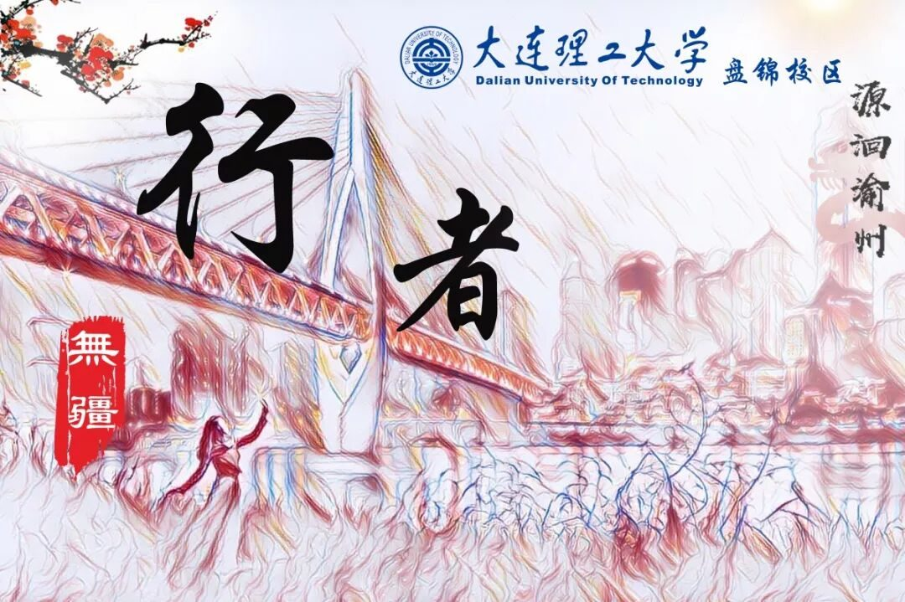
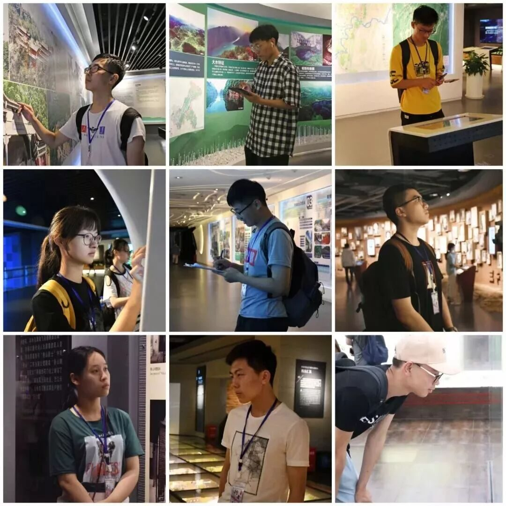
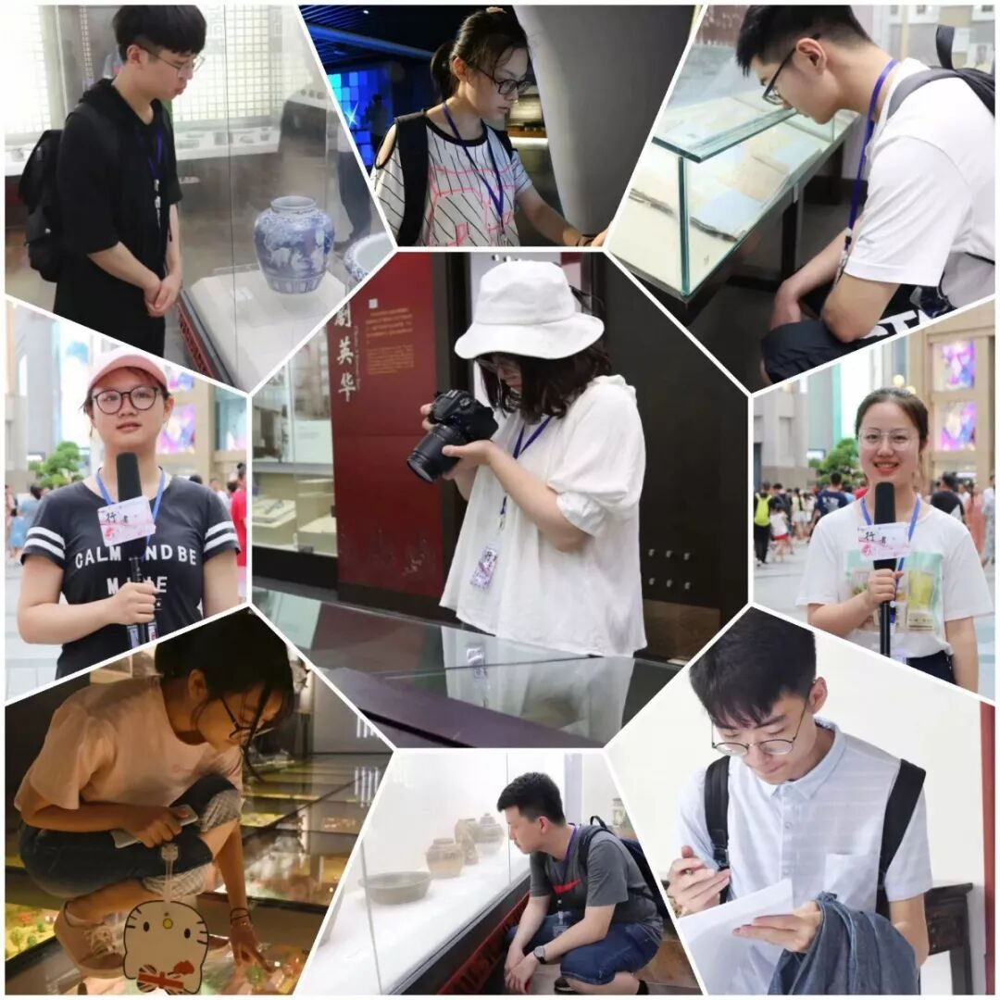
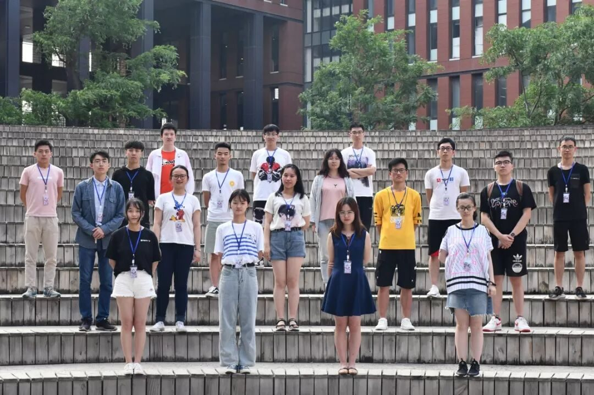
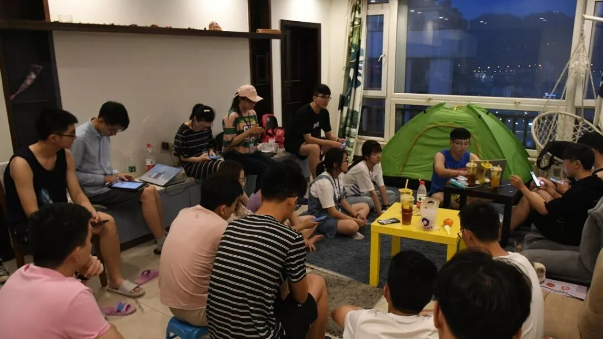
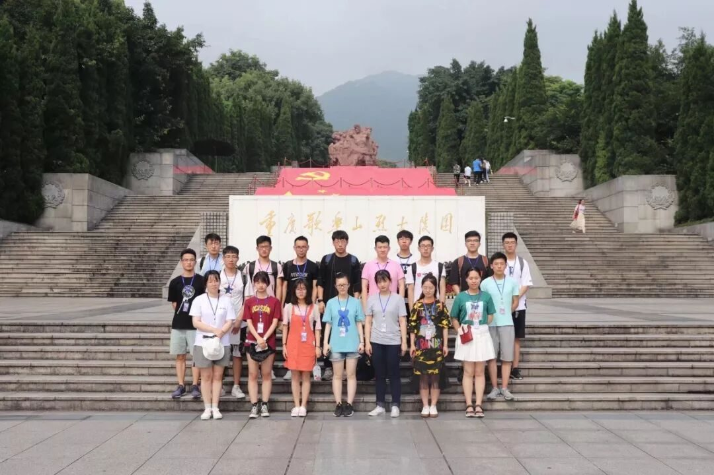
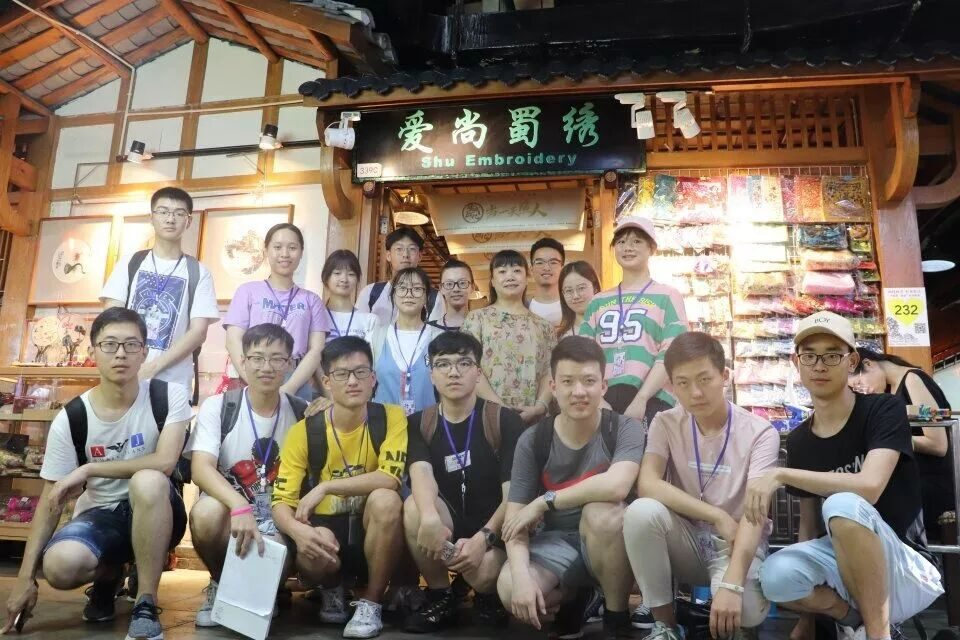

【渝传尺素·一】如果可以，我想再爱你三千遍

行者
沈柏宇
“沈柏宇同学你好…是你的热情，你的用心，你的能力打动了我们。而我们也相信，在即将到来的文化苦旅中，我们将共同书写精彩的故事，而你，也会不忘初心的，对吗？”
“行者无疆你好，谢谢你接纳了我，谢谢你陪我一同走过这3段苦旅。从未忘却初心，我想我做到了…”

行者无疆
4天前，时长6天的“源洄渝州”之旅在依稀告别中宣告了完结，现在能想起的画面可能是28号晚上那天一群不再被“压榨”的沙雕疯疯癫癫地在谈着笑着。在我看来，时间最残酷的地方不在于你控制不了它的流逝，而是在于它总是让你在一段时间内习惯一种生活方式，之后却又要让彼此之间分离。这种分离也许是短暂性的，过一段时间你又会折返到这些方式，从拾遗皖徽——韶忆长安——源洄渝州，虽每次苦旅都相隔半年，但在从坐上火车那一刻起，你会感觉你又回到了一个家；而这种分离也许会是永久性的，因为种种缘由，甚至来不及和它好好说再见，来不及和他们一一拥抱，Ta就成为了你的一段记忆。


此时此刻，我正敲击着键盘，打了又删删了又打无穷尽也。我努力地在告诉自己，别太矫情，理性一些，这只是你人生长河中汇入的一条小溪流…
“不，它不是，它肯定不是…不论它是不是，我都觉得我应该和它有一次真诚的告别，正如刚开始时我对它的真诚那般。”
不有行者，无以图将来
——致源洄渝州
第六期时，有幸能成为队伍的负责人，利用自己所学所识，将这份文脉传承下去。现在回想起来，从5月接过队伍，确定调研主题，到6月完成招募，开始文化科普、行者课堂、校园采访，再到7月份尾巴这几天到达重庆躬身实践，这一路上有太多的欢快和焦虑，也有过无数次的徘徊与坚持，但终于等到你，还好我没放弃。

从上了去重庆的火车后，一瞬间回到了半年前的状态，仿佛距离西安之行只过了一周的时间。19小时的旅途成了调研前最轻松的团建，有遇见了可爱的小女孩，有进行了几场我乱带节奏让好人从来没赢过的狼人杀，也和那些女生一起了解了“韩商言”等等。这样的感觉很奇妙，如果形容起来的话我想应该是：一群带着同一目标的年青人，带着对远方的憧憬，带着对文化的向往，一起奔走，相互扶持。在重庆这六天，应该是所有队员身体透支最重的几天吧，每天早上8点就已冲入拥挤的1号线，一直到下午6点才能回到住所，人均每天2W+的步数在这座山城里，顶着烈日和空调的切换，来回上下穿梭。每次我想起那一张张在轻轨上累的不行打瞌睡的面孔，还有那一身身被汗水打湿的衣服，心里面真的会好一阵心疼。但谁让我们是行者呢，谁让我们是那群即使再疲惫也要打起精神来去把任务完成好的行者呢。

6天的辗转中，我们见过了重庆的城市规划蓝图，也认识了从古至今对重庆发展做出重大贡献的英雄名人们；我们看过了巴渝民俗村里传承下来的优良传统，也在川剧博物馆、三峡博物馆里听着工作人员描绘着巴渝文化的前世今生；我们在渣滓洞白公馆，红岩魂纪念馆里悼念着英魂的不朽，忠魂的高尚，也叹息着网红因素的过度消费；我们沉浸在北碚往事中，为卢作孚先生实业救国的事迹叹为观止，也在建川博物馆中，以物忆史，对樊老的贡献称赞不已；我们有幸能听到周老师为我们讲述“家国情怀”，也感动于蜀绣国家级继承人黄女士同我们发自内心的亲切交流…这次的调研主题是“文化对人文精神的影响”，对于我而言，最大的体会主要在于两点：一是传统文化与网红商业化的碰撞，巴渝文化同英雄文化的息息相关和现状对比；二是我们不仅需要了解官方的介绍与专家的研究，更需要躬身于百姓生活的环境中，才能实践得真知。



做行者无疆3期了，对于“通过社会实践要获得什么”这个问题，其实在不同类别的团队，不同的人看来回答都不一样——或许有的人是要提升专业能力，为就业准备；有的人是对应学业上的需求而去完成；而有的人可能是想为社会的建设发展贡献一份力量…而在我看来，行者们更偏向于去为学业之外的环境去传播一种由当代大学生自主焕发的正能量并且在这个过程中相互帮助，患难与共。实践日每天的24个小时里我们一起吃东西，挤地铁，开会讨论，工作然后一起休息，这或许是行者无疆的“家”文化。
对于我而言，行者大家庭以及各位行者er们是我在三期实践中最大的收获，我们一同躬身实践、调研求索、宣传反馈的经历将是我在很长一段时间内陪伴我继续成长的袖珍宝物，特别是第六期我们对于人文精神的探索让我再一次领悟了行者的情怀，我想那就是：让我们去记录和领略忙碌生活外那些能让自己触动的画面，去看到诗和远方，让先辈留下的珍贵文化流入我们的血脉，同时秉持着大工学子的风范，以后更好的去帮助国家建设，为中华民族的延续发展贡献力量。
好了，老行者的矫情就到此结束了。行者无疆，继续加油，相信我们会越来越棒的。哦对了！记住，我们是一家人，并且一直都是。
思者无域，行者无疆
行者们不说再见
但如果可以
我想再爱你三千遍
来源丨行者无疆实践团
文字丨沈柏宇
排版丨邓子孚
审核丨邓子孚 段智然
视频丨陈辉
行者无疆实践团
QQ：2758025831

随行者一起认识世界
长按二维码